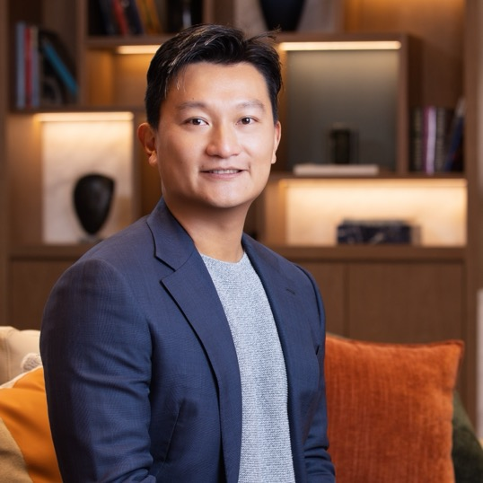
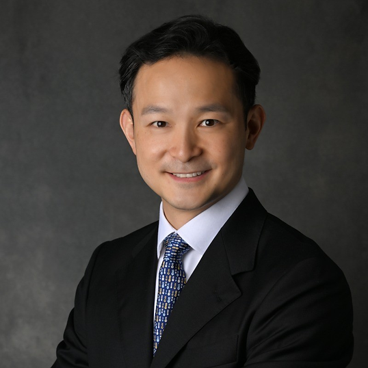

Understand
Connect custodians, documents, manager notes, holdings, events, and mandate rules.
Family Office Software in Hong Kong
Turoid helps Hong Kong and Singapore family offices turn portfolio data, documents, reporting, and internal workflows into AI agents that monitor, reason, and act with evidence.
AI CIO on your own data

Award recognition
Turoid was recognised at the WealthBriefingAsia Greater China Awards 2026 for its approach to agentic AI across family-office operations, reporting, and workflow automation.
Ecosystem
Agentic AI
Family offices do not need another isolated dashboard. They need agents that can read internal context, monitor exposures, prepare decisions, and coordinate work across the investment office.
Connect custodians, documents, manager notes, holdings, events, and mandate rules.
Ask questions across your own data and receive evidence-backed investment context.
Route approvals, prepare reports, monitor exceptions, and coordinate the next workflow.
Use Cases
Agentic AI becomes valuable when it can reduce operational drag, improve decision context, and help lean teams scale without adding headcount.
Multi Family Office
Multiple custodians, private banks, and fund administrators, supported by an Excel-heavy mid and back office with a 4-person ops team.
Private Credit Manager
Oversees 10+ funds across multiple strategies while dealing with fragmented data from custodians, fund admins, and underlying managers.
Team
Turoid brings together wealth management experience, AI engineering, full-stack product execution, and senior asset-management advisory depth.

Founder & CEO
Wealth-tech founder with experience across business development, asset management, fintech, and bank AI implementations. Built US$1B+ alts investment platform Altive from scratch after starting his career at Macquarie.
AI Lead
Previously co-founded a venture-backed tech startup in China and holds a PhD in Machine Learning from King's College London.
Engineering Lead
Former AI Engineer at CLSA, where she led development of an internal AI chatbot used across departments.

Advisor
Former Head of Alternatives APAC at J.P. Morgan Asset Management and former Head of Alternatives at Bank of Singapore.
Full Stack Engineer
Scholarship-winning engineer from Kazakhstan with a track record in building innovative full-stack solutions.
Advisor
Founding Partner of Azuremount, a PE fund focused on SaaS investment, previously with EQT and Macquarie IBD.
Media
Coverage, announcements, and essays on how agentic AI is changing family-office operations and wealth management.
Hubbis covers how Turoid and Annum Capital are bringing AI-enabled operating architecture to family offices and asset managers.
Read articleA partnership announcement introducing Wealth Pilot and its role across onboarding, analytics, reporting, and governance workflows.
View releaseNick Wong shares the founder story behind Turoid and why the team is building AI infrastructure for wealth management.
See postTuroid’s perspective on agentic AI, family-office operations, and the future of lean wealth teams.
Read articleFollow company updates, product notes, articles, and team activity from Turoid.
Visit company pageCoverage on continued Asian family-office interest in leading AI private-market opportunities, with context relevant to Turoid and Annum Capital.
Read articleCustomer Proof
Teams running complex portfolios across multiple custodians choose Turoid to reduce operational drag and improve decision context.
Annum Capital
"For lean investment teams, Turoid adds structure and clarity to day-to-day portfolio operations."
Managing Director, Annum Capital
Vice President, HKLPFA
[Company name]
"[Short quote — replace with approved customer quote.]"
[Title]
[Company name]
"[Short quote — replace with approved customer quote.]"
[Title]
Hong Kong Guides
Practical pages for family offices comparing vendors, replacing Excel-heavy reporting, and deciding where AI belongs in their operating model.
A report-style checklist for reporting, Excel risk, alternatives, document AI, and controls.
View page
Free auditA 20-minute review of reporting, Excel risk, alts, document AI, and controls.
View page
Exact guideThe exact-search hub for HK family offices comparing software, reporting, AI, and Excel replacement.
View page
ComparisonA buyer-style comparison of Turoid, global platforms, and Excel/manual workflows.
View page
GuideA practical guide to reporting, alts, AI, controls, and software selection.
View page
ToolA quick scorecard to see whether a family office has outgrown spreadsheets.
View page
ReportingTargeted workflows for private-bank data, alts, reconciliation, and monthly reports.
View page
AlternativesPrivate fund reporting for NAVs, commitments, capital calls, and manager documents.
View page
Document AITurn statements, capital calls, fund reports, and manager PDFs into workflow data.
View page
Excel ReplacementMove recurring reporting, approvals, and data workflows out of fragile spreadsheets.
View page
SINGAPORE GUIDES
Practical pages for Singapore family offices reviewing software options, reporting workflows, and implementation readiness.
A buyer-style comparison of family office software options in Singapore.
View page
ReportingReporting workflows for portfolio packs, recurring updates, and stakeholder communication.
View page
AuditA practical audit framework to evaluate software readiness and operational priorities.
View page
FAQ
This section helps both buyers and search engines understand where Turoid fits: portfolio operations, reporting, controls, and AI-assisted investment workflows.
Contact
Turoid is based in Sheung Wan, Hong Kong and is currently focused on helping family offices modernize how investment and operations teams work.
Room 2601, 26/F, Arion Commercial Centre,
2-12 Queen's Road West,
Sheung Wan, Hong Kong